Ghid pentru Ștefan: cum intri, unde găsești programările, cum le verifici, le muți, încasezi și ce faci după ședință, până la livrarea fotografiilor.
Sezonul 2026 · 1 noiembrie – 24 decembrie
1Pe scurt: cum funcționează
Clienții își aleg singuri ziua, ora și pachetul pe pagina stefanchelmu.ro/sedinte-foto-de-craciun. Ora se blochează pe loc, ca nimeni altcineva să n-o mai poată lua.
1. Se programeazăPe site sau la telefon, prin tine.
2. PlăteșteOnline, cu linkul primit, sau la studio, cash ori card.
3. Primește mesajeConfirmare, apoi reamintiri cu o zi și cu o oră înainte.
4. Vine la studioFaci ședința, apoi livrezi fotografiile.
Tu ai nevoie de un singur loc: meniul Programări din site. Acolo vezi cine vine, cine a plătit și cine nu, și poți schimba orice.
Regula de aurProgramările se fac și se schimbă doar din site, nu din Google Sheet. Sheet-ul e doar o copie de siguranță, care se actualizează singură.
2Cum intri în site
Deschide în browser, pe calculator sau pe telefon, adresa stefanchelmu.ro/wp-admin.
Scrie numele de utilizator și parola ta, apoi apasă Autentificare.
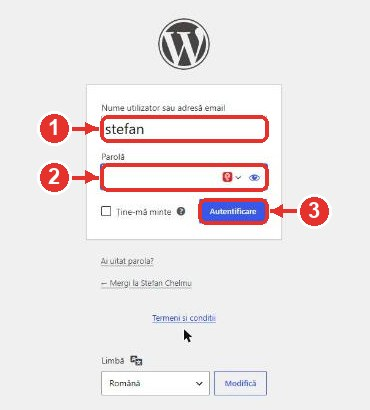
Ecranul de autentificare
Numele de utilizator (sau emailul).
Parola.
Butonul Autentificare. Bifează „Ține-mă minte” pe telefonul tău, ca să nu mai scrii parola de fiecare dată.
Dacă apare „Verificăm că ești om”Pagina albă de la Cloudflare dispare singură după câteva secunde. Dacă cere să bifezi o căsuță, bifeaz-o.
3Panoul: ce ai azi și mâine
După ce intri, mergi în meniul din stânga la Programări. Prima pagină, Panou, îți arată dintr-o privire ce ai de făcut.
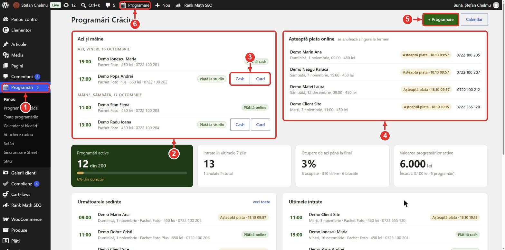
Panou: ședințele de azi și de mâine, plus cine încă n-a plătit
Meniul Programări, cu toate paginile: Panou, Programare rapidă, Toate programările, Calendar, Vouchere cadou.
Azi și mâine: cine vine, la ce oră, ce pachet are și dacă a plătit.
Cash / Card: apasă când clientul îți plătește la studio. Programarea devine „Plătită”, iar butoanele dispar.
Așteaptă plata online: rezervări făcute pe site și încă neplătite, cu termenul limită și telefonul. Dacă nu plătesc până la termen, se anulează singure, iar ora se eliberează.
+ Programare: faci tu o programare nouă, de exemplu când te sună cineva (vezi capitolul 9).
Programare în bara neagră de sus: ajungi la programarea rapidă de pe orice pagină a site-ului, chiar și de pe telefon.
4Calendarul: vezi și verifici o programare
Mergi la Programări → Calendar și blocări. Vezi fiecare zi cu orele ei, iar în fiecare căsuță ocupată, numele și telefonul clientului. Apasă pe o căsuță: în dreapta apar toate detaliile și ce poți face.
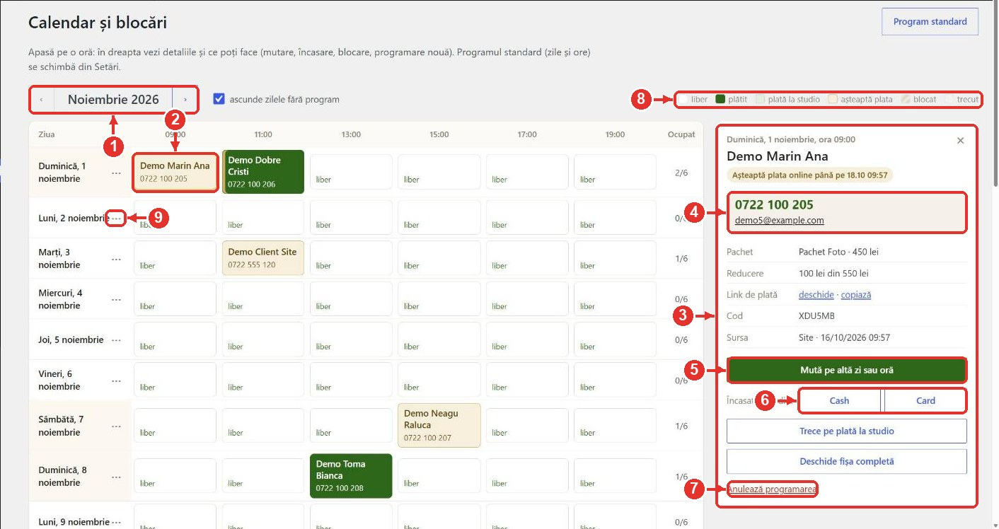
Calendarul: apeși pe o oră, iar în dreapta apar detaliile
Luna: săgețile ‹ › te duc la luna anterioară sau următoare.
Anulează programarea: ora se eliberează pe site. Bifa „Anunță clientul pe email” îi trimite clientului un email.
Legenda culorilor (vezi tabelul de mai jos).
⋯ lângă zi: închizi toată ziua sau adaugi o oră în plus (vezi capitolul 6).
Culoarea căsuței
Ce înseamnă
Verde închis
Plătită (online, cash, card sau cu voucher). E sigură.
Verde deschis
Confirmată, plătește la studio. Încasezi cu Cash sau Card când vine.
Galben
Așteaptă plata online. Dacă nu plătește până la termen, se anulează singură.
Albă „liber”
Oră liberă: o poate lua oricine de pe site.
Hașurată
Oră blocată de tine: nu apare pe site.
Butoanele din panouTrece pe plată la studio apare la cei care așteaptă plata online, dacă ți-au spus că plătesc la tine. Programarea se confirmă și nu se mai anulează singură. Deschide fișa completă te duce la toate detaliile, unde poți modifica orice (vezi capitolul 8).
5Muți o programare pe altă oră
Când un client te roagă să-i schimbi ora, chiar dacă a plătit deja:
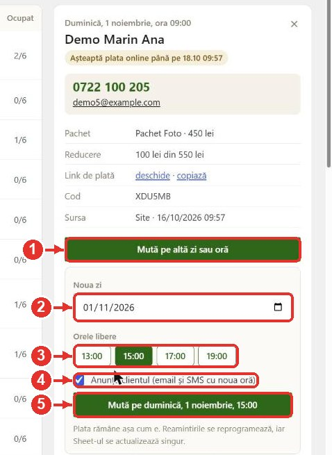
Mutarea din panoul calendarului
În calendar, deschide programarea și apasă Mută pe altă zi sau oră.
Alege noua zi.
Apar doar orele libere din ziua aleasă. Apasă pe cea dorită.
Lasă bifat Anunță clientul: primește email și SMS cu noua oră.
Apasă butonul verde Mută pe …. Gata.
Ce se întâmplă automatPlata rămâne așa cum era. Reamintirile se mută pe noua oră. Vechea oră se eliberează pe site. Copia din Google Sheet se actualizează singură.
6Ore libere, ore blocate, zile închise
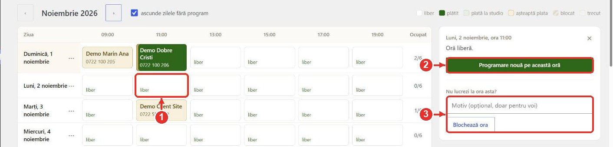
Apeși pe o oră liberă
Apasă pe o oră liberă din calendar.
Programare nouă pe această oră: deschide programarea rapidă cu ziua și ora deja alese.
Blochează ora: ora nu mai apare pe site, de exemplu dacă ai altceva atunci. Motivul e opțional și îl vezi doar tu. Ca s-o deschizi din nou, apasă pe ea și alege Deblochează ora.
Închizi o zi întreagă sau adaugi o oră în plus
Apasă pe ⋯ de lângă numele zilei (marcajul 9 din calendar):
Închide toată ziua: ziua dispare de pe site. Programările deja făcute rămân valabile.
Adaugă ora: o oră în plus doar în ziua aceea, de exemplu 10:30.
7Cauți o programare după nume sau telefon
Mergi la Programări → Toate programările.
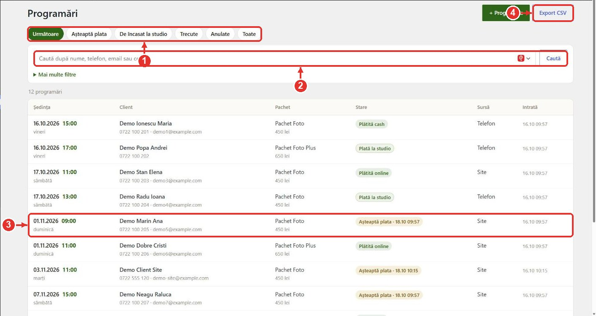
Toate programările, cu filtre și căutare
Filtrele rapide: Următoare (ce urmează), Așteaptă plata, De încasat la studio, Trecute, Anulate, Toate.
Căutarea: scrie o parte din nume, telefon, email sau codul programării, apoi apasă Caută.
Apasă pe un rând ca să deschizi fișa completă.
Export CSV: descarci lista într-un fișier pe care îl deschizi în Excel.
8Fișa completă: modifici orice
Fișa se deschide din calendar (Deschide fișa completă) sau din listă (apeși pe rând).
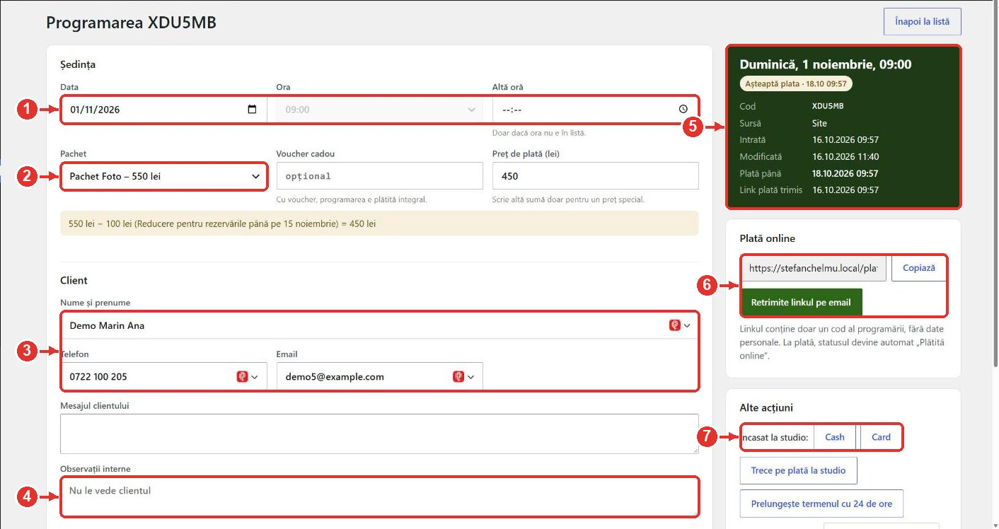
Fișa programării, partea de sus
Data și ora ședinței. Pentru mutare, e mai simplu din calendar (capitolul 5).
Pachetul: dacă clientul vrea alt pachet, alegi aici. Prețul se recalculează singur.
Datele clientului: nume, telefon, email. Corectezi aici o greșeală de scriere.
Observații interne: notițele tale (copii, animal, ținute). Clientul nu le vede.
Rezumatul: ziua, statusul plății, codul, de unde a venit, termenul de plată.
Plată online: linkul de plată al clientului. Copiază, ca să i-l trimiți pe WhatsApp, sau Retrimite linkul pe email.
Încasat la studio: Cash sau Card.
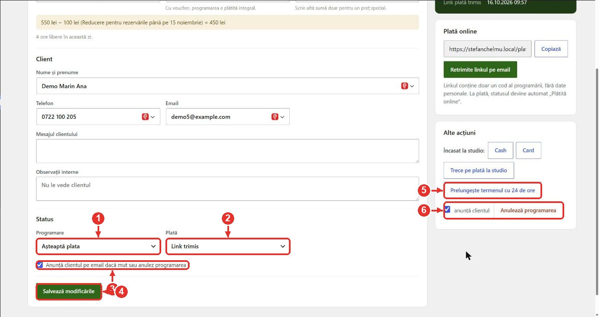
Fișa programării, partea de jos: statusul și salvarea
Status plată: se schimbă singur la plată. Îl modifici doar în cazuri speciale.
Anunță clientul pe email dacă muți sau anulezi programarea.
Salvează modificările: nimic nu se schimbă până nu apeși aici.
Prelungește termenul cu 24 de ore: când clientul îți cere puțin timp în plus să plătească online.
Anulează programarea: ora se eliberează pe site.
9Faci tu o programare (la telefon)
Când te sună sau îți scrie cineva: apasă + Programare (în bara neagră de sus sau în Panou). Merge la fel și de pe telefon.
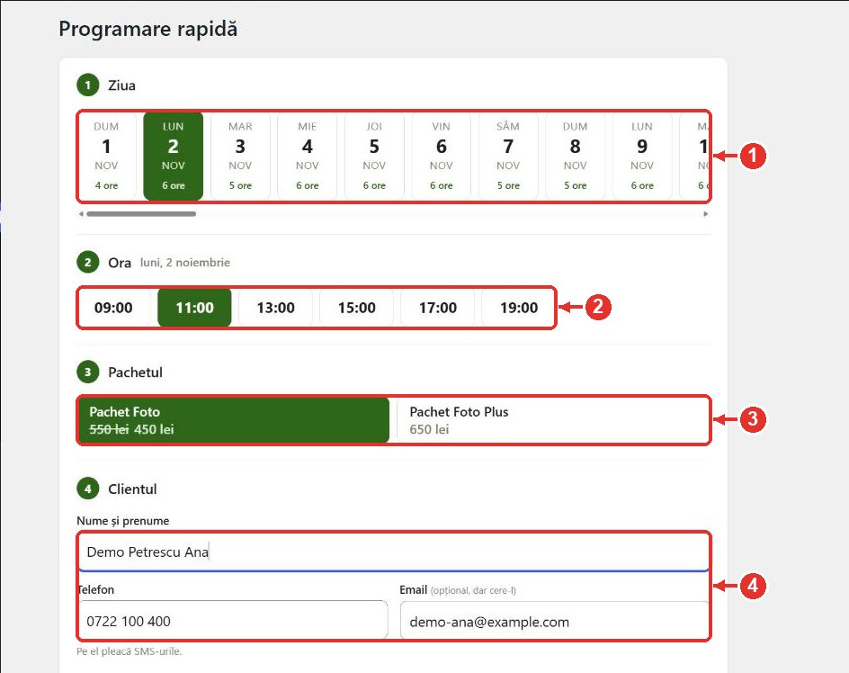
Programare rapidă: ziua, ora, pachetul, clientul
Ziua: apar doar zilele cu ore libere. Sub fiecare zi vezi câte ore mai sunt.
Ora: doar orele libere din ziua aleasă.
Pachetul, cu prețul de azi (inclusiv reducerea, dacă e în perioada ei).
Clientul: nume și telefon. Cere-i și emailul, ca să primească și confirmarea pe email.
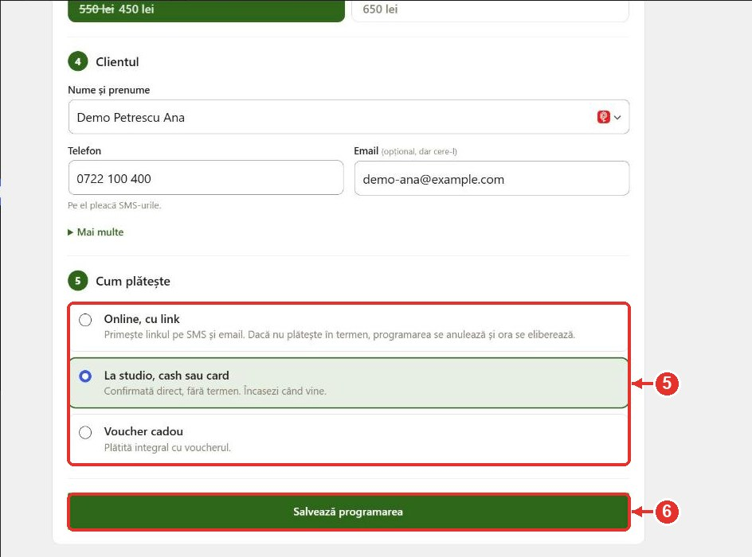
Cum plătește clientul, apoi salvezi
Cum plătește:
Online, cu link: primește linkul pe SMS și pe email. Dacă nu plătește în termen, programarea se anulează singură.
La studio, cash sau card: e confirmată direct, fără termen. Încasezi când vine.
Voucher cadou: scrii codul voucherului și programarea e plătită integral.
Salvează programarea.
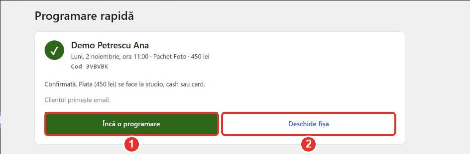
Gata: programarea e salvată, iar ora e blocată pe site
Încă o programare, dacă mai ai de pus pe cineva.
Deschide fișa, ca să vezi sau să modifici programarea abia făcută.
Dacă cineva tocmai a luat ora pe siteApare mesajul „ora tocmai a fost ocupată”, iar orele se reîncarcă. Alege altă oră.
10Plățile, pe înțeles
Cum plătește
Ce se întâmplă
Ce faci tu
Online, cu cardul
Primește linkul de plată pe email și SMS. Are un termen. Dacă plătește, devine „Plătită online”. Dacă nu, se anulează singură la termen, primește un email, iar ora se eliberează.
Nimic. Dacă îți cere timp în plus: Prelungește termenul cu 24 de ore. Dacă vrea să plătească la tine: Trece pe plată la studio.
La studio
Programarea e confirmată, fără termen. Apare în „De încasat la studio”.
Când îți plătește, apeși Cash sau Card.
Voucher cadou
E plătită integral din voucher.
Nimic.
Reducerea de început de sezonSe aplică automat celor care rezervă până la data din setări. Prețul rămâne cel de la rezervare, chiar dacă plătesc mai târziu, în termen.
11Voucherele cadou
Cine cumpără un voucher de pe site primește pe email un cod (de forma CHELMU-BRAD-K7MP9Q), pe care îl dă cadou. Cel care primește codul îl introduce la programare și nu mai plătește nimic. Toate le vezi în Programări → Vouchere cadou.
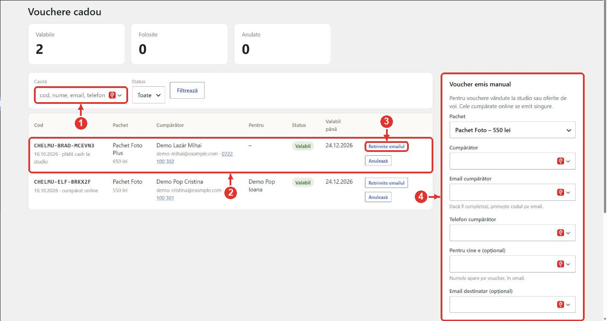
Voucherele: cumpărătorul, pentru cine e, statusul
Căutare după cod, nume, email sau telefon.
Voucherul: codul, pachetul, cine l-a cumpărat (cu telefon), pentru cine e și până când e valabil.
Retrimite emailul: dacă cumpărătorul n-a primit sau a pierdut codul.
Voucher emis manual: când vinzi un voucher la studio, cash, sau oferi unul cadou. Alegi pachetul, scrii cumpărătorul și apeși Emite voucherul. Dacă îi scrii și emailul, primește codul pe email.
ReguliUn voucher se folosește o singură dată, doar pentru pachetul cumpărat, până la finalul sezonului. Dacă programarea făcută cu voucher se anulează, voucherul redevine valabil.
12Ce primește clientul (email și SMS)
Totul pleacă singur, nu trebuie să trimiți tu nimic. SMS-urile vin de la un număr scurt și se încheie cu „- Stefan Chelmu”, ca oamenii să știe de la cine sunt.
Când
Ce primește
La rezervare, cu plata online
Email și SMS cu linkul de plată și termenul.
La plată (online, cash, card) sau rezervare la studio / cu voucher
Confirmarea, cu ziua, ora și adresa studioului.
Când muți ședința (cu „Anunță clientul”)
Email și SMS cu noua oră.
Cu o zi înainte, seara
SMS de reamintire.
Cu o oră înainte
SMS cu locația pe hartă și telefonul studioului.
Dacă nu plătește în termen
Email că rezervarea s-a anulat.
Tu primești pe email o alertă la fiecare programare nouă, plus un raport seara, cu ședințele de a doua zi.
13Ziua ședinței și livrarea
Înainte
Uită-te în Panou → Azi și mâine: cine vine, la ce oră, ce pachet are și dacă a plătit. Clientul primește singur reamintirile.
La studio
Dacă plătește acum, apasă Cash sau Card în Panou sau în calendar.
Dacă vrea alt pachet (de exemplu Plus în loc de Foto), schimbă pachetul din fișă și salvează. Prețul se recalculează.
După ședință
În fișă, la Status programare, alege Finalizată și salvează. Dacă clientul n-a venit, alege Neprezentat.
În Google Sheet, tab-ul Programari, pe rândul clientului: la Etapa treci Editat când lucrezi la poze, apoi Livrat când le-ai trimis. Completează Nr. bon/factura și Link galerie.
Trimite galeria clientului cum o trimiți de obicei.
14Copia din Google Sheet
Fișierul „[Stefan Chelmu] Craciun 2026” din Google Drive se completează singur la fiecare programare, plată, mutare sau anulare.
Tab
Ce e
Poți scrie?
Programari
Lista ta cu toate programările. Are listele derulante Pachet, Status, Plata și Etapa (Programat, Editat, Livrat).
Da. Coloanele tale sunt Etapa, Nr. bon/factura și Link galerie, pe care site-ul nu le atinge niciodată.
Noiembrie / Decembrie
Agenda pe zile și ore, ca în anii trecuți. Apar doar programările confirmate.
Doar în Observații, Nr. bon/factura și Link galerie. Restul e blocat.
Leads
Tot ce a intrat de pe site, inclusiv anulările.
Nu (e blocat).
Anulari
Doar programările anulate.
Nu (e blocat).
AtențieDacă schimbi în Sheet ora, numele sau plata, schimbarea nu ajunge în site și se pierde la următoarea actualizare. Schimbările se fac în site.
15Situații frecvente
Clientul sună să mute ședința
Calendar → apeși pe programare → Mută pe altă zi sau oră → alegi ziua și ora → Mută. Clientul primește email și SMS.
Clientul n-a apucat să plătească online
Dacă mai vrea, apasă Prelungește termenul cu 24 de ore în fișă și trimite-i linkul (Copiază, apoi pe WhatsApp). Dacă vrea să plătească la tine: Trece pe plată la studio.
Programarea s-a anulat singură, dar clientul tot vrea ora
Dacă ora e încă liberă, fă-i o programare nouă din + Programare, pe aceeași oră, cu „La studio” sau „Online”.
Calendar sau fișă → Anulează programarea. Dacă vrei, lasă bifat „Anunță clientul”. Ora devine imediat liberă pe site.
Codul de voucher nu merge
Caută codul în Vouchere cadou. Acolo vezi dacă e valabil, folosit sau anulat și pentru ce pachet e. Voucherul merge doar pentru pachetul cumpărat.
Nu vreau să lucrez într-o anumită zi sau oră
Calendar → apeși pe ora liberă → Blochează ora. Pentru o zi întreagă: ⋯ lângă zi → Închide toată ziua.
Un client spune că n-a primit SMS-ul
Verifică în fișă că telefonul e scris corect. SMS-urile pleacă doar pe numere mobile din România (07…). Clientul primește oricum și emailul, dacă l-a dat.